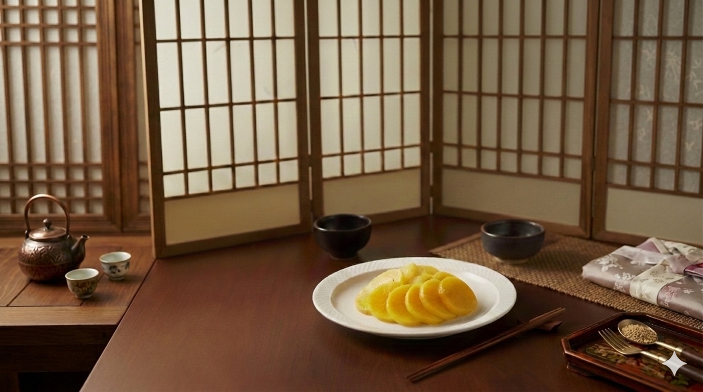
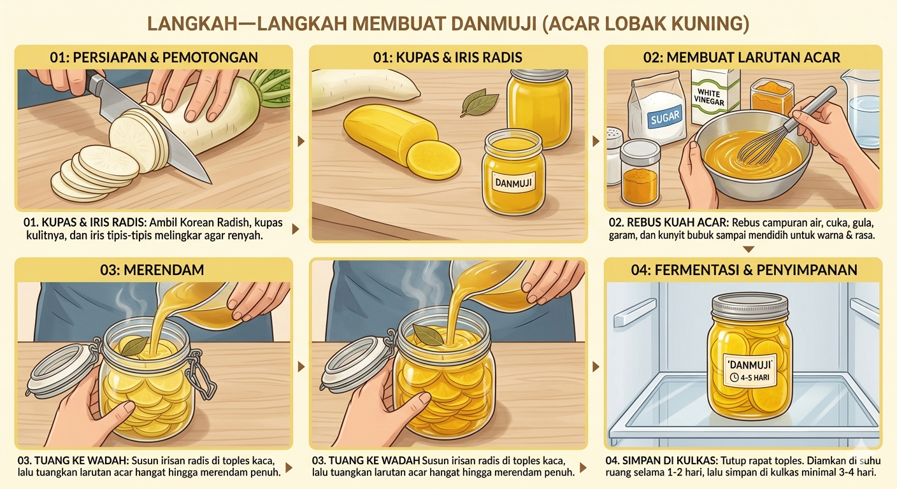

Selamat datang di blog saya dan terima kasih atas kesempatan yang diberikan. Pada kesempatan ini, saya akan membahas salah satu contoh penerapan bioteknologi dalam bidang pangan, yaitu pembuatan Danmuji. Makanan khas Korea ini tidak hanya dikenal karena rasanya yang unik, tetapi juga karena proses pengolahannya yang melibatkan teknik pengawetan dan fermentasi yang berkaitan dengan konsep bioteknologi pangan.Danmuji adalah acar lobak kuning khas Korea yang dibuat dari lobak putih yang diawetkan menggunakan larutan garam, gula, dan cuka. Dalam konteks bioteknologi pangan, proses pembuatan danmuji termasuk dalam teknik pengolahan dan pengawetan makanan yang memanfaatkan proses biologis maupun kimia sederhana untuk meningkatkan daya simpan dan cita rasa.

Poduk yang dibuat dalam proyek bioteknologi ini adalah Danmuji, yaitu acar lobak kuning khas Korea yang diolah melalui proses pengawetan dan fermentasi. Bahan utama yang digunakan adalah Korean radish atau lobak putih yang dipotong bulat bulat kemudian direndam dalam larutan garam, gula, dan cuka hingga menghasilkan rasa asam, manis, dan sedikit asin yang khas. Inti dari pembuatan proyek produk bioteknologi ini adalah memanfaatkan proses fermentasi oleh mikroorganisme untuk mengawetkan bahan pangan sekaligus meningkatkan cita rasa dan daya simpan makanan. Dalam proses fermentasi danmuji, mikroorganisme seperti Lactobacillus berperan penting dalam mengubah gula yang terdapat pada lobak menjadi asam laktat. Proses ini membuat lingkungan menjadi lebih asam sehingga dapat menghambat pertumbuhan bakteri pembusuk dan membuat produk lebih tahan lama.Pada project bioteknologi membuat produk fermentasi ini saya melakukan 3 batch pembuatan Danmuji, dimana memiliki waktu perlakuan fermentasi yang berbeda-beda, saya membuat 3 batch yang terdapat Danmuji fermentasi 1 hari, 3 hari, dan 5 hari. Perlakuan ini ditujukan supaya bisa meneliti hasil produk Danmuji yang maksimal dan terbaik dengan melakukan perocbaan dengan lama waktu yang berbeda.

Proses pembuatan Danmuji dimulai dengan mencuci bersih Korean radish, kemudian mengupas dan memotongnya memanjang seperti bulat. Setelah itu, lobak ditaburi garam dan didiamkan selama sekitar 30 sampai 60 menit agar air dari lobak keluar dan teksturnya menjadi lebih lentur. Selanjutnya dibuat larutan perendam dengan memanaskan air yang dicampur gula, cuka, dan biji chija hingga larut, lalu didinginkan. Potongan lobak kemudian dimasukkan ke dalam toples kaca dan dituangi larutan hingga seluruh bagian terendam. Wadah ditutup rapat dan dibiarkan selama 1 sampai 3 hari pada suhu ruang agar terjadi proses fermentasi yang dibantu oleh bakteri seperti Lactobacillus. Setelah proses fermentasi berlangsung dan rasa mulai terbentuk, danmuji dapat disimpan di dalam lemari pendingin agar lebih tahan lama dan siap untuk dikonsumsi.